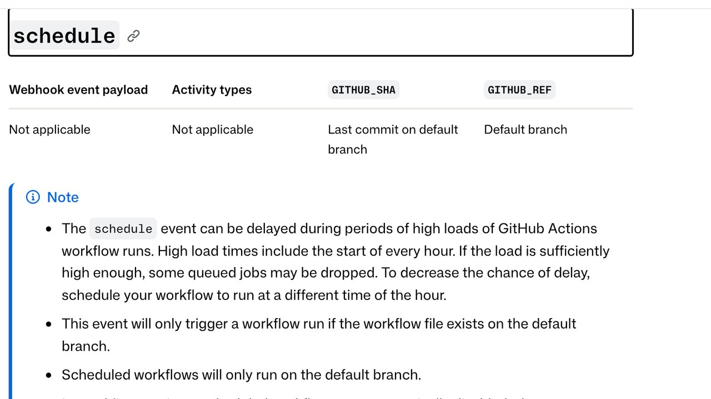

H ay un momento concreto en el que un agente de IA deja de ser una herramienta y pasa a ser una pieza de infraestructura: cuando lo programas para que se ejecute solo. Hasta entonces tú abrías el chat, le pedías algo, leías la respuesta y decidías qué hacer con ella. A partir de ahí, se ejecuta a las 7:00, haga lo que haga, lo leas o no.
El salto parece pequeño —es el mismo agente, el mismo prompt, solo que con un reloj delante— y es el cambio más grande que vas a hacer en tu automatización. No porque el modelo empeore, sino porque desaparece la pieza que sostenía todo lo demás sin que te dieras cuenta: tú, mirando.
Esta guía va de eso: qué cambia exactamente cuando nadie mira, por qué el disparador que programas no es tan puntual como crees (con lo que dice la documentación oficial, no lo que se supone), las cuatro preguntas que conviene contestar antes de programar nada, y el error que casi todo el mundo comete al final — montar un informe automático que nadie llega a leer. Si todavía estás en la fase anterior, la de automatizar tareas repetitivas con un humano delante, empieza por automatizar tareas repetitivas con agentes de IA.
Los tres trabajos que hacías sin saberlo
Cuando usas un agente con el chat abierto crees que haces una sola cosa: leer la respuesta. En realidad haces tres, y las tres desaparecen de golpe el día que lo programas.
- El filtro de sensatez. Cuando el agente propone algo raro, lo notas en medio segundo y no sigues. No es una revisión formal: es que te chirría. Esa señal no está escrita en ningún sitio y no se puede delegar en el propio modelo, porque es justo el modelo el que se ha equivocado.
- El botón de parar. Si va por mal camino, lo cortas. Un agente programado que entra en bucle a las 3:00 no tiene a nadie que lo corte hasta que alguien se despierta — o hasta que se acaba el saldo.
- La lectura del resultado. Cuando lo pides tú, lees lo que sale, siempre, porque estabas esperándolo. Cuando llega solo todos los días, dejas de leerlo en dos semanas. Esto es lo más previsible de todo y es lo que casi nadie tiene en cuenta al montarlo.
La consecuencia práctica es que automatizar bien no consiste en escribir un prompt mejor. Consiste en reponer esos tres trabajos con mecanismos: límites que sustituyan al filtro, topes que sustituyan al botón de parar, y un diseño de avisos que sustituya a tu atención. El prompt es la parte fácil.
Qué merece programarse y qué no
La pregunta no es si la tarea se puede automatizar, porque casi todas se pueden. Es si merece la pena que ocurra sin ti. Hay tres rasgos que, cuando se dan los tres a la vez, hacen que programar algo salga bien; cuando falta alguno, lo normal es que acabes desactivándolo a las pocas semanas.
- Llega sola, en un momento que no eliges. Revisar si han entrado facturas nuevas, vigilar si una página ha cambiado, mirar si un servicio sigue respondiendo. Si la tarea aparece cuando tú decides sentarte, programarla no te ahorra nada: el disparador ya eras tú.
- Es aburrida y siempre igual. El valor de automatizar está en la repetición idéntica, no en la dificultad. Una tarea difícil que haces una vez al trimestre no se programa: se hace bien una vez. Una tarea trivial que haces cada día a las ocho es exactamente la candidata.
- El fallo es barato. Si equivocarse significa que te llega un resumen con un dato de más, adelante. Si significa mandar un correo a un cliente, cobrar algo o publicar en tu nombre, lo que se programa es la preparación, y la acción final se queda con un botón que pulsas tú.
Esa última distinción es la que más rendimiento da y la que menos se usa. Casi cualquier tarea se puede partir en dos: una parte larga, aburrida y sin riesgo —reunir, filtrar, ordenar, redactar un borrador— y un paso final corto que sí tiene consecuencias. Programar la primera y dejarte la segunda te da casi todo el ahorro de tiempo con casi ninguno de los riesgos de esta guía. Cuando alguien dice que su automatización «no le ahorra trabajo porque tiene que revisarlo todo», casi siempre es que automatizó la mitad equivocada.
Y un aviso sobre la frecuencia, que es donde más se exagera: cada hora casi nunca es la respuesta correcta. La frecuencia debería salir de cuánto tardas en poder hacer algo con el resultado. Si de todas formas vas a mirarlo por la mañana, que se ejecute una vez por la mañana. Programar cada hora algo que lees una vez al día multiplica por veinticuatro el coste y el número de cosas que pueden salir mal, a cambio de una información que no vas a usar antes.
La hora que programas es una intención, no una garantía
Esta es la parte que más sorprende a quien viene de pensar en un reloj. Pones «todos los días a las 7:00» y asumes que a las 7:00 pasa algo. En los sistemas que de verdad se usan para esto, no es así, y no es un fallo: está documentado.
GitHub Actions es el caso más fácil de comprobar porque su documentación lo dice sin rodeos. El evento schedule, escribe GitHub, «puede retrasarse durante periodos de mucha carga de ejecuciones de GitHub Actions», y añade que «los momentos de más carga incluyen el principio de cada hora» y que «si la carga es suficientemente alta, algunos trabajos en cola pueden descartarse». Su propia recomendación es programar el flujo «a una hora distinta del inicio de la hora». El intervalo mínimo, además, es de cinco minutos. Está en la página oficial de eventos que disparan flujos, en la nota que ves en la foto de arriba.
Léelo otra vez, porque hay dos avisos distintos ahí. Uno es que tu tarea puede llegar tarde. El otro, mucho peor, es que puede no llegar: un trabajo descartado no se ejecuta más tarde, simplemente no se ejecuta. Si tu automatización asume que cada ejecución recoge lo que dejó la anterior, un hueco silencioso te deja un agujero en los datos que no vas a ver.
Y hay una trampa más, específica de ahí: GitHub desactiva automáticamente los flujos programados de un repositorio público cuando pasan 60 días sin actividad en el repositorio. No te lo quita porque falle; te lo quita porque nadie ha tocado nada. Si montaste un vigilante que precisamente no genera actividad cuando todo va bien, el vigilante se apaga solo a los dos meses, justo por hacer bien su trabajo.
En n8n el detalle que más cuesta caro es otro: la zona horaria. Su documentación del nodo Schedule Trigger explica que el nodo usa la zona horaria del flujo si la has puesto y, si no, la de la instancia — cuyo valor por defecto en instalaciones propias es America/New_York. Es decir: si no tocas nada, tu «todas las mañanas a las 8:00» puede estar corriendo a las dos de la tarde hora peninsular. Y una segunda, más tonta y más frecuente: un flujo con disparador programado no se ejecuta por existir; hay que guardarlo y activarlo.
En los asistentes con tareas programadas integradas (ChatGPT las llama tareas; otros las llaman rutinas) la ejecución ocurre en los servidores del proveedor, tengas la aplicación abierta o no, y te avisa al terminar. El número de tareas activas que puedes tener depende del plan y ha cambiado más de una vez, así que no te fíes de ninguna cifra que leas por ahí —esta incluida—: míralo en la pantalla de tareas de tu propia cuenta, que es la única fuente que está al día.
La conclusión práctica no es «no uses estos sistemas». Es que un agente programado tiene que tolerar llegar tarde, ejecutarse dos veces o no ejecutarse. Si tu diseño depende de que el reloj sea exacto, el diseño está mal antes de empezar.
Las cuatro preguntas de antes
Antes de poner un horario, contesta estas cuatro por escrito. No es burocracia: cada una corresponde a un fallo que vas a tener si no la contestas.
1. ¿Qué pasa si se ejecuta dos veces?
Un reintento, un despliegue duplicado o un solape entre una ejecución lenta y la siguiente hacen que tu tarea corra dos veces sobre lo mismo. Si la tarea es «resume las novedades y mándamelas», ejecutarla dos veces es molesto. Si es «envía el correo a los clientes nuevos» o «publica el artículo», ejecutarla dos veces es un problema delante de otras personas. La solución no es rezar: es que la tarea deje una marca de lo que ya hizo —una fecha, un identificador, un fichero— y lo compruebe antes de actuar. En la jerga se llama idempotencia; en la práctica es «mira si ya lo hiciste antes de hacerlo».
2. ¿Hasta dónde llega si se equivoca?
Esta es la pregunta del alcance, y se contesta con permisos, no con instrucciones. Un agente que solo puede leer un calendario y escribirte un resumen tiene un alcance diminuto por mucho que se equivoque. Un agente con la contraseña de tu correo y permiso para enviar tiene un alcance que no controla ninguna frase del prompt. La regla es dar el permiso más estrecho que haga el trabajo, y darlo con credenciales propias de la tarea, no con las tuyas. Lo desarrollamos en qué permisos darle a un agente sin entregarle tus contraseñas.
3. ¿Cuánto puede gastar antes de que alguien lo note?
Una tarea programada convierte un coste puntual en un coste recurrente, y la multiplicación es poco intuitiva. Algo que vale unos céntimos por ejecución y te parece gratis, cada hora, son 720 ejecuciones al mes. Si además el agente reintenta cuando falla, el mes malo no cuesta el doble: cuesta lo que dure el bucle. Pon un tope de gasto en el proveedor, no solo en tu cabeza — es lo primero que cubrimos en límites de gasto para agentes de IA, y el cálculo por token está en cuánto cuesta usar la IA por API.
4. ¿Cómo te enteras de que ha dejado de funcionar?
El fallo que más tarda en descubrirse no es el que da error: es el que deja de ejecutarse. Un error te llega por correo; un silencio no te llega por ningún sitio. Si la tarea importa, necesitas lo contrario de lo que todo el mundo monta: en vez de un aviso cuando algo va mal, una comprobación de que ha habido ejecución. Es el mismo principio que el flujo desactivado a los 60 días del que hablábamos antes — lo que no hace ruido no se nota.
Sin nadie delante, la inyección de instrucciones es peor
Si tu agente programado lee algo que viene de fuera —correos, páginas web, mensajes, comentarios, facturas en PDF— hereda entero el problema de la inyección de instrucciones: texto escondido en ese contenido que el modelo interpreta como órdenes tuyas. Lo explicamos a fondo en prompt injection: cómo pueden manipular a tu agente.
Lo que cambia al programarlo es que desaparece la defensa que de verdad estaba funcionando. Con el chat abierto, cuando un agente anuncia que va a reenviar una conversación a una dirección que no conoces, lo ves y lo paras. Sin nadie delante, ese mismo paso se ejecuta y queda registrado en un historial que nadie va a abrir. No hace falta que el ataque sea sofisticado: le basta con llegar a una hora en la que no hay nadie.
De ahí sale una regla sencilla y bastante estricta: si una tarea automática procesa contenido que no controlas, no debería tener a la vez permiso para actuar hacia fuera. Que lea y te resuma, o que actúe sobre cosas que tú le has dado; las dos a la vez, sin supervisión, es la combinación que de verdad hace daño. Y si necesitas las dos, mete una confirmación humana en el paso que sale al exterior — aunque eso signifique que la tarea no sea completamente automática. Esa es exactamente la decisión que estás tomando.
El informe diario que nadie lee
Supongamos que lo has hecho todo bien: la tarea se ejecuta, respeta sus límites y te manda su informe cada mañana. Lo leerás la primera semana. La segunda lo mirarás por encima. La tercera será un correo que archivas sin abrir, y a partir de ahí tu automatización ha dejado de existir aunque siga ejecutándose.
Esto no es falta de disciplina, es cómo funciona la atención: un aviso que casi siempre dice lo mismo deja de ser información. Y el coste real no es el correo de más. Es que el día que el informe traiga algo importante, estará dentro del mismo correo que llevas tres semanas sin abrir.
El arreglo es incómodo porque va contra el instinto de quien acaba de montar algo: haz que tu tarea se calle. Que no avise cuando todo está normal, y que avise solo cuando hay algo que decidir o algo que se ha roto. Un aviso que llega poco se lee entero; uno que llega siempre no se lee nunca. Si te cuesta renunciar al informe, sepáralos: un aviso que interrumpe, reservado a lo que requiere acción, y un registro al que vas tú cuando quieres mirar.
Y cuando avise, que el aviso diga lo que pasa, no que ha terminado. «Tarea completada» te obliga a abrir algo para saber si te importa. «3 facturas sin referencia de pedido, la más antigua del 12 de octubre» ya te deja decidir sin abrir nada. La diferencia entre las dos cosas es el 90 % del valor de una automatización desatendida.
Cómo soltarlo sin que se note
No pases de la idea al horario de un salto. Este orden cuesta unos días y se ahorra los sustos:
- A mano, varias veces. Ejecuta la tarea tú mismo cinco o diez veces, en días distintos y con datos distintos. La mayoría de los fallos que vas a tener aparecen aquí, y aquí todavía los ves.
- En seco. Prográmala, pero que no actúe: que escriba lo que habría hecho. Una semana así te enseña más que cualquier prueba, porque ya corre a su hora, con los datos reales de cada día, y todavía no puede hacer daño.
- Con la acción puesta y el alcance pequeño. Déjala actuar, pero sobre un subconjunto: una carpeta, un cliente, una etiqueta. Si algo sale mal, sale mal en pequeño.
- Entera, con tope y con aviso. Solo entonces le quitas la restricción, y con el tope de gasto y la comprobación de que ha habido ejecución ya puestos.
El paso 2 es el que más se salta y el que más devuelve. Una ejecución en seco no prueba que el agente acierte: prueba algo más básico y más útil, que es que se dispara cuando dices, que encuentra los datos que espera y que no se queda a medias. Para medir si además acierta, que es otra cosa, está evaluar un agente de IA. Y los fallos clásicos de automatizar con IA, programada o no, los tienes reunidos en errores comunes al automatizar tareas con IA.
Dónde ejecutarlo, con sus pegas
Ninguna de estas opciones es la buena en general; cada una lo es para un tipo de tarea.
- Las tareas del propio asistente. Lo más rápido de montar y lo que menos puede hacer: va bien para que te prepare, te resuma o te recuerde algo. Se ejecuta en el proveedor sin que tengas nada encendido. La pega es que vives dentro de lo que ese asistente permite tocar, y el número de tareas depende de tu plan.
- n8n u otra herramienta de flujos. El punto dulce para la mayoría de las automatizaciones de un negocio pequeño: ves el flujo, conectas servicios sin programar y puedes meter un paso de confirmación humana donde haga falta. La pega son los detalles que no se ven — la zona horaria, el flujo guardado pero sin activar. Tienes la guía entera en n8n y IA: automatización visual sin código.
- GitHub Actions. Gratis dentro de unos límites, cómodo si lo que automatizas ya vive en un repositorio y deja un registro de cada ejecución. Las pegas son las de arriba, y son serias para una tarea crítica: puede retrasarse, puede descartarse y se desactiva sola a los 60 días de inactividad en repositorios públicos.
- Cron en una máquina tuya. El más predecible de todos y el que nadie te va a cambiar. A cambio, te toca a ti todo lo demás: que la máquina esté encendida, los reintentos, los registros y enterarte de que ha dejado de funcionar.
Un criterio que funciona bien para elegir: mira qué pasa si la tarea no se ejecuta un día. Si la respuesta es «nada grave», cualquiera de las cuatro sirve y gana la más cómoda. Si la respuesta es «se nos cae algo» o «alguien se queda sin su aviso», descarta lo que pueda descartar ejecuciones y monta la comprobación de que ha habido ejecución antes de depender de ella.
La lista de antes de programarlo
- Sé qué pasa si se ejecuta dos veces, y la tarea lo comprueba sola.
- Sé qué pasa si no se ejecuta, y me entero de que no se ha ejecutado.
- Tiene los permisos mínimos, con credenciales de la tarea y no las mías.
- Hay un tope de gasto puesto en el proveedor, no solo en mi cabeza.
- Si lee contenido de fuera, no puede actuar hacia fuera sin que yo confirme.
- La he ejecutado a mano varias veces y una semana en seco.
- Avisa solo cuando hay algo que decidir, y el aviso dice qué pasa.
- Sé a quién le llega el aviso cuando yo esté de vacaciones.
Si no puedes marcar las ocho, no significa que no lo montes. Significa que sabes por dónde te va a fallar, que es una posición bastante mejor que la de enterarte en noviembre de que lleva desde septiembre sin ejecutarse.